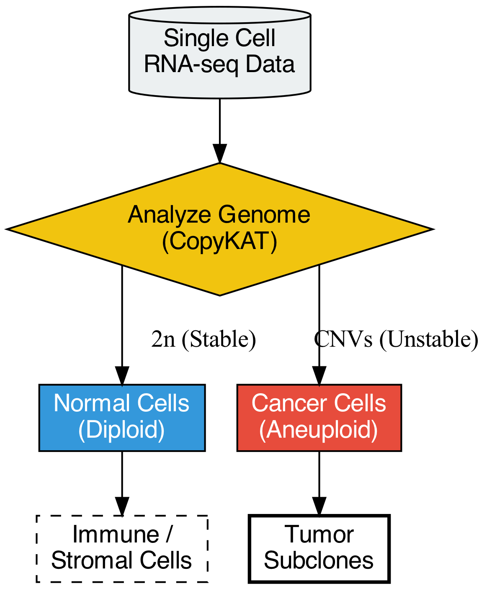
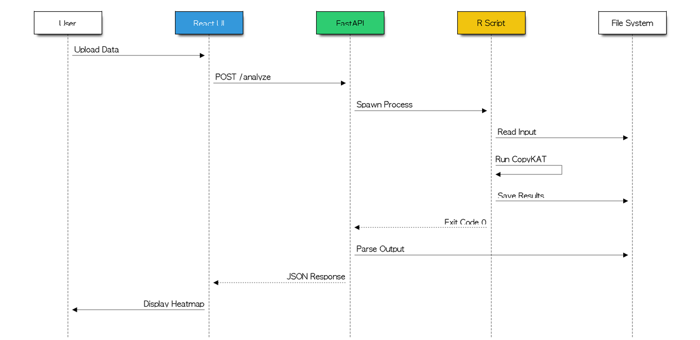
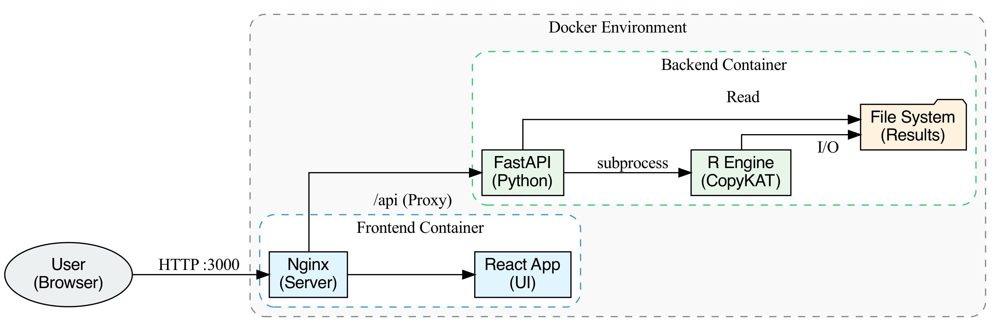
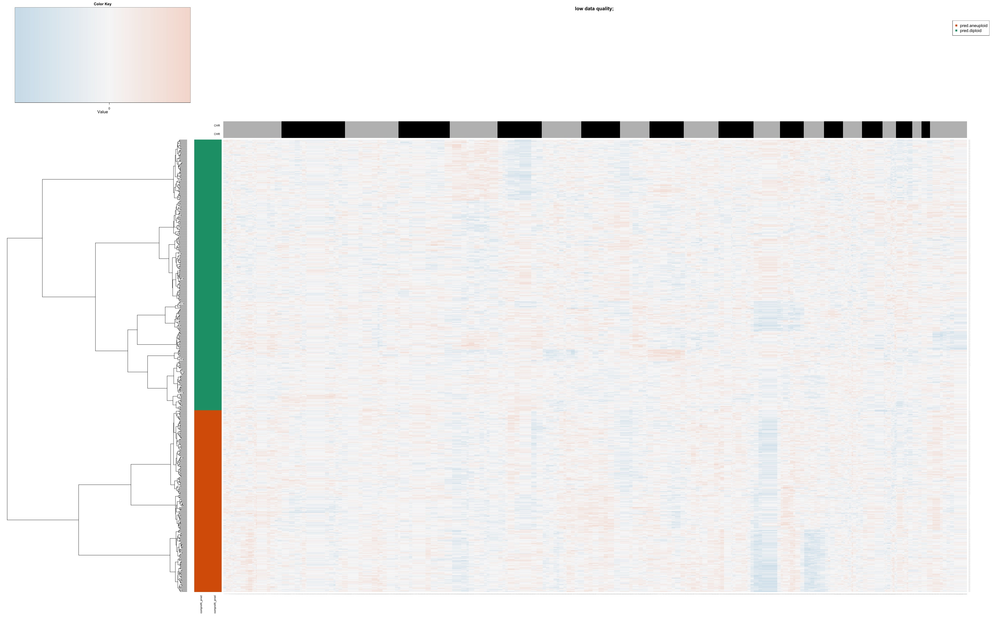

CNV-Cancer-RNAseq-analysis
Baovi Nguyen, Rajan Tavathia, Jimmy Liu, Allison Cheng, Hanson Wen
Computational Biology @ Berkeley
Abstract
We present a user-friendly, hybrid Python/R application for Copy Number Variation (CNV) analysis from single-cell RNA sequencing data.
Using the CopyKAT algorithm, our tool distinguishes malignant cells from normal cells and visualizes genomic instability,
addressing the critical challenge of identifying tumor subpopulations in heterogeneous tissue samples.
Background & Motivation
The Challenge: Tumor samples are mixtures of malignant, immune, and stromal cells. Traditional clustering struggles to distinguish them based on expression alone.
The Solution: Cancer cells exhibit genomic instability (CNVs). CopyKAT exploits this by detecting:
- Amplifications: Gains in chromosome regions (e.g., EGFR in Glioblastoma).
- Deletions: Losses of regions (e.g., PTEN tumor suppressor).

Fig 1. Biological basis of CNV analysis.
Methodology: CopyKAT Pipeline
The core analysis follows a robust 10-step pipeline:
- Input: Gene expression matrix (genes x cells).
- Filtering: Remove low-quality cells/genes.
- Smoothing: Variance stabilization & chromosomal smoothing.
- Baseline: Identify diploid cells as normal reference.
- Inference: Compare all cells to baseline to find CNVs.
- Classification: Label cells as Aneuploid vs. Diploid.
System Architecture
The project utilizes a modern, decoupled 3-tier architecture designed for scalability and reproducibility.
- Frontend: React + TypeScript + Tailwind CSS (Responsive UI).
- Backend: FastAPI (Python) for API management.
- Analysis Engine: R + CopyKAT package for computation.
Data Flow

Fig 2. End-to-end data processing flow.
Deployment & Infrastructure
To ensure reproducibility across different scientific environments, the application is containerized using Docker.

Fig 3. Docker container architecture.
Key Features:
- Auto-detection of log-transformed data.
- Timestamped output directories to prevent overwrites.
- No direct R calls from frontend; secure Python bridge.
Results: Glioblastoma Case Study
Validated using the GSE57872 dataset (Patel et al., 2014).
- Input: ~400 single cells.
- Runtime: ~1.2 minutes (Docker mode).
- Output:
- 222 Aneuploid (40.88%)
- 321 Diploid (59.12%)

Fig 4. CopyKAT Heatmap showing chromosomal amplifications (Red) and deletions (Blue).
Future Directions
- Performance: Optimization for large datasets (>10k cells).
- Features: Integration with inferCNV for comparative analysis.
- DevOps: Full CI/CD pipeline for automated testing.
Conclusion
CNV-Cancer-RNAseq-analysis successfully democratizes access to advanced single-cell CNV analysis. By wrapping the complex CopyKAT R package in a modern, intuitive web interface, we enable researchers to focus on biological interpretation rather than computational setup.